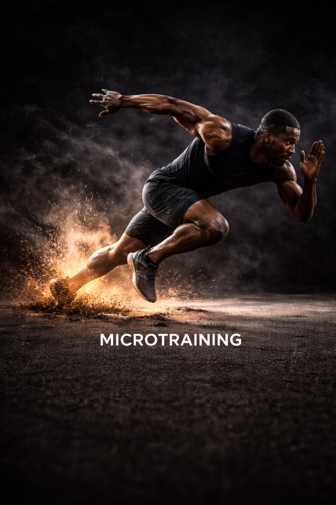

Ajoute l'app à ton écran d'accueil pour un accès rapide.
ATHLETIK HUB
Les secrets de la détente verticale
ATHLETIK HUB
Compagnon du livre
Performance · Discipline · Progression
EXPLOSE TA DÉTENTE.
Ton livre t'a donné la méthode. Titan te donne la mission du jour : t'entraîner, mesurer, progresser. Pas de blabla. Juste du travail qui se voit.
·
01 / 03
T
JE SUIS TITAN.
Le coach Alassane m'a créé pour te faire progresser. Pas pour te flatter.
T
AVANCE. POUR DE VRAI.
Chaque séance compte. Chaque test te situe. Tu vois tes vrais progrès — sans te raconter d'histoires.
T
TITAN
Avant de commencer : quelques questions. Pas de bla-bla, juste ton objectif et tes mesures.
Si tu mens sur tes chiffres, tu te mens à toi. Pas à moi.
Ça prend 3 minutes. Sois honnête.
QUESTION 01 / 01 · AVANT COMPTE
2 min
TON OBJECTIF.
Un seul. Le bon. Tu pourras affiner après.
Le mauvais objectif, c'est 3 mois perdus. Choisis ce que tu veux vraiment.
Étape 2 / 3 — Test physique
On va mesurer ton niveau réel.
Le SAT mesure 5 choses : détente, force, sprint, agilité, mobilité. Le vrai test demande 30 min + un peu de matériel. Tu peux le faire maintenant dans Tracks > SAT, ou faire une estimation rapide ici pour que Titan puisse t'orienter en attendant.
ESTIMATION TITAN
—
Étape 3 / 3 — Nutrition
Ton corps + ton objectif.
Titan calcule tes besoins caloriques et macros. Tout est automatique.
⚡ Plan nutrition calibré
TES BESOINS QUOTIDIENS
2400
kcal / jour
160
PROT (g)
280
GLUC (g)
80
LIP (g)
"Voilà tes chiffres. Suis-les. Pas plus, pas moins."
ATHLETIK HUB
Crée ton compte
TITAN
Crée ton compte. Sans ça, je peux rien sauvegarder de ton travail.
Rejoins la meute
Crée ton compte pour accéder à ton programme personnalisé.
Coche tout ce que tu as. Titan adapte le programme.
T
TITAN ANALYSE
Titan calibre ton plan. Pas au hasard.
0%
Il analyse ton profil, tes tests et ton objectif.
Touche Titan et garde le doigt — tu vas le sentir bosser.
FÉLICITATIONS
Ton programme personnalisé est prêt. Tu vas travailler le programme :
🏆
ELITE ATHLETE
Explosivité complète
16-20 semaines
Progressif
Durée—
Objectif—
Niveau—
T
TITAN
PROFIL 2/3 — NPI NUTRITION
Réponds sur tes 7 derniers jours. Sois honnête — Titan a besoin de la vérité, pas de la version idéale.
T
NPI — Nutrition Performance Index. T'auras beau avoir le meilleur programme du monde, si ton carburant est mauvais, tes résultats seront mauvais.
📊 PILIER 1 — BILAN ÉNERGÉTIQUE
Combien de repas complets par jour ?
Repas vrais — pas les grignotages ni les barres
📊 PILIER 1 — BILAN ÉNERGÉTIQUE
Ton niveau d'énergie général ?
Sur les 7 derniers jours
Épuisé 😴Explosif ⚡
5
/10
📊 PILIER 1 — BILAN ÉNERGÉTIQUE
Tu réduis les calories tout en t'entraînant fort ?
Manger peu + s'entraîner beaucoup = erreur commune
🍖 PILIER 2 — MACRONUTRIMENTS
Protéines à chaque repas ?
Viande, poisson, œufs, légumineuses, whey...
🍖 PILIER 2 — MACRONUTRIMENTS
Glucides complexes régulièrement ?
Riz, pâtes, patates douces, flocons d'avoine...
🍖 PILIER 2 — MACRONUTRIMENTS
Bonnes sources de lipides ?
Huile d'olive, avocat, noix, poissons gras, beurre de cacahuète...
💧 PILIER 3 — HYDRATATION
Litres d'eau par jour ?
Une déshydratation de 2% suffit à réduire ta force et ta vitesse
💧 PILIER 3 — HYDRATATION
Couleur de ton urine en général ?
💡 Indicateur le plus fiable d'hydratation
💧 PILIER 3 — HYDRATATION
Tu bois pendant l'entraînement ?
⏱ PILIER 4 — QUALITÉ & TIMING
Aliments ultra-transformés par semaine ?
Fast-food, plats préparés, sodas, snacks industriels
⏱ PILIER 4 — QUALITÉ & TIMING
Tu manges avant l'entraînement ?
Dans les 2-3h avant — glucides complexes idéalement
⏱ PILIER 4 — QUALITÉ & TIMING
Tu manges après l'entraînement ?
Dans l'heure qui suit — protéines + glucides rapides
🛌 PILIER 5 — RÉCUPÉRATION
Heures de sommeil par nuit ?
La progression se construit pendant le sommeil — pas pendant l'entraînement
🛌 PILIER 5 — RÉCUPÉRATION
Qualité de ton sommeil ?
Catastrophique 😫Excellent 😴
5
/10
TON SCORE NPI
0
/100
DIAGNOSTIC PAR PILIER
PROFIL 3 / 3 · TESTS PHYSIQUES
🏋️ SAT — Super Athlétique Test
▶
Guide vidéo
Faire tes tests physiques
Regarde la démo (30-60 sec) avant de commencer.
💡
Pourquoi ces tests ? Sans données réelles, Titan calibre ton programme à l'aveugle. Ces mesures définissent ton point de départ, ton Athletik Score, et ta progression dans le temps.
CE QU'ON VA MESURER
📐Détente verticale
⚡Sprint / vitesse
💥Explosivité / puissance
Ton programme utilise le SET — Super Explosif Test. C'est le test terrain complet : vitesse, endurance anaérobie, agilité, détente, force et composition corporelle.
SPRINT 60M
3 essais · repos 3 min · meilleur temps retenu
sec
94 FEET DRILL
Allers-retours terrain basket (28.65m × 2) pendant 3 min
AR
LANE AGILITY
Sprint + shuffle latéral + backpedal — surface raquette NBA
sec
DÉTENTE VERTICALE
Même protocole Sargent Test que SAT
cm
cm
TEST PHYSIOLOGIQUE
Poids + photos face / profil / dos — avant/après
kg
📸 Prends tes photos maintenant (face, profil, dos). Garde-les sur ton téléphone — tu les compareras en fin de programme.
⚠️ Échauffe-toi correctement avant les tests. Pas d'intensification. Refais les tests dans les mêmes conditions pour comparer ta progression.
⏱ Prévois 10–15 min, échauffement inclus.
Tu peux passer maintenant. Ton programme reste accessible, mais ton Athletik Score sera calculé après tes tests.
PROFIL 2 / 3 · NUTRITION
Étape 1 / 3
Quel est ton objectif nutrition ?
Sélectionne une priorité. On adaptera ensuite tes apports, ton timing et ta récupération.
COACH TITAN
La nutrition est ton carburant. Choisis ton objectif principal — on construit le plan autour de ta performance.
Tes données de départ
Ces informations nous permettent d'estimer tes calories, tes macros et ton évolution.
Tu pourras modifier ces données plus tard.
1
Informations de base
kg
Ton poids aujourd'hui
cm
Ta taille actuelle
2
Ton objectif
kg
Le poids que tu souhaites atteindre
3
Optionnel
Optionnel
%
Pas besoin d'être précis. Si tu ne connais pas ta masse grasse, laisse ce champ vide.
📐 TES BESOINS QUOTIDIENS
Calcul Mifflin-St Jeor
—
KCAL/JOUR
—
G PROTÉINES
—
G GLUCIDES
—
G LIPIDES
TON SUIVI
Comment tu veux gérer ta nutrition au quotidien.
📐
STRICT
L'app génère ton plan repas exact. Aucune décision à prendre, tu suis.
🎨
FLEXIBLE
Recettes de l'app + tes propres repas, tu calibres comme tu veux.
📓 Étape suivante : dans une semaine, Titan te proposera l'enquête alimentaire 3-7 jours pour calculer ton score NPI précis.
✓PROFIL COMPLET
ATHLÈTE
TON PLAN EST PRÊT
3500
kcal/jour
OPTIMISATION
RÉPARTITION MACROS
—
PROTÉINES
—
GLUCIDES
—
LIPIDES
T
Voilà ton carburant quotidien. Maintenant on bosse.
BONJOUR, ATHLÈTE.
SET—
CMJ—
J—
PROFIL ATHLETIK · 0/3
À FINIR
ProgrammeNutritionTests
DÉBLOQUE TA SÉANCE
Commence par tes mesures. Sans ça, je ne peux pas te programmer un travail honnête.
Ta séance du jour
Verrouillé
PROFIL 0/4 REQUIS
À déterminer
SÉANCE VERROUILLÉE
— MIN · — EXOS
Mon planning
Modifier →
Repas du jour
Voir le plan complet →
Nutrition du jour
Journal →
0
RESTANT
KCAL
0g
PROT
0g
GLUC
0g
LIP
🎯Mon profil Athletik
25%
3 étapes pour débloquer ton coaching personnalisé
Phase 1 — Fondations
0%
Athletik Score
ℹ️ Comment ça marche
⚠️ MAILLON FAIBLE
Comment ton score est calculé :
Détente 40% · Force Squat 25% · Sprint 20% · Mobilité 15%.
Chaque métrique te place sur 5 niveaux : Débutant → Intermédiaire → Avancé → Élite → Surhumain. Standards issus du livre — NSCA, ACSM, NBA Draft Combine.
Titan
Streak
0 JOURS
Commence aujourd'hui.
🔥
Mes habitudes
0 / 3 actives
🔔 Tu as 2 habitudes à cocher aujourd'hui.
TRACKS
Mesure, track et progresse.
📏
COMPOSITION CORPORELLE
Body Fat 7 plis · Jackson & Pollock
→
Vue d'ensemble
Tests
Exercices
Journal
← Retour aux tests
SAT · Bilan force
SUPER ATHLÉTIQUE TEST
5 tests · 45-60 min · détente verticale + force pure (squat, soulevé, hip thrust, développé couché).
↩️ Tes valeurs ont été restaurées. Continue où tu en étais.
Recommencer à zéro
🦘 Test 1 — Détente verticale
cm
cm
Détente = Hauteur max − Taille bras levés
🏋️ Test 2 — Force (5RM)
kg
kg
kg
kg
1RM estimé = 5RM × 1.15
📖
SAT terminé — conforme au livre
Détente verticale + 4 mouvements de force pure. Le sprint et l'agilité se mesurent via le SET.
ATHLETIK SCORE
0/100
ROOKIE
🦘 Détente verticale
—40%
🏋️ Force (1RM Squat)
—25%
⚡ Sprint
—20%
🧘 Mobilité FMS
—15%
"Score enregistré."
← Retour aux tests
SET · Bilan explosif
SUPER EXPLOSIF TEST
5 catégories · 60-75 min · 94 feet, sprint 60m, détente, physiologique, force pure.
📊 Tracker un exercice
—
🏋️ Charge × Reps
⏱ Temps
📏 Distance
⬆ Hauteur × Reps
🔢 Reps seuls
Dernier score
—
1
2
3
4
5
6
7
8
9
10
"Enregistré."
✅
Exercice enregistré
PROCHAINE ACTION
Derniers exercices trackés
🔥
LANCER UNE SÉANCE
Les exercices de ton programme défilent un par un. Tu enregistres tes données en direct.
"C'est comme ça qu'on progresse. Repose-toi bien. On remet ça demain."
TRAIN
Programmes, librairie et construction.
Programmes
Librairie
Builder
Librairie d'exercices
Trouve, consulte, ajoute à ta séance.
🔍
← Retour
Voir la vidéo
PLIOMÉTRIE
EXERCICE
Description de l'exercice.
MUSCLES CIBLÉS
CONSIGNES D'EXÉCUTION
ERREURS À ÉVITER
EN COURS
ELITE ATHLETE
Explosivité globale
🔒 Programme requis
VERTICAL DUNK
Dunker + Détente max

🔒 Programme requis
MICROTRAINING
Discipline et habitudes
🔒 Programme requis
TRIPHASIQUE
Force sans salle
🔒 Programme requis
SHRED EXPLOSE
Perdre + Exploser
🔒 Programme requis
EXPLOSE+
Transformation totale
← Retour Programmes
PROGRAMME
Objectif
Fondations
Intensification
Peak
🔒
WORKOUT BUILDER
Le Workout Builder sera débloqué après avoir terminé 2 programmes d'entraînement. Cette fonctionnalité te permettra de créer tes propres séances personnalisées avec Titan.
0 / 2 programmes terminés
WORKOUT BUILDER
Construire ma séance
Titan te programme une séance sur mesure, en quelques questions.
1Ton objectif & ton état du jour
2Ton temps & ton matériel
3Titan structure ta séance
WORKOUT BUILDER
Construis ta séance
Choisis un objectif, Titan te propose une séance adaptée.
Objectif
Exercices
Durée
Matériel
Séance
🏋️
TITAN PROGRAMME TA SÉANCE...
Il analyse ton objectif, ton état et la méthode Athletik Hub.
Touche Titan et garde le doigt — tu vas le sentir bosser.
GUIDE RAPIDE
—
Vidéo courte — 30 à 60 secondes.
MES SÉANCES FAVORITES
←
⋮
T
TITAN
En ligne
Titan
Yo. T'es connecté. Si t'es là c'est pour bosser. Dis-moi ce que tu veux travailler ou pose ta question.
Aujourd'hui
A
ATHLÈTE
athlete@email.com
—
Score /100
3
Jours streak
8
Séances
2
Badges
👤 MON PROFIL
Complète ton profil
ÂgeNon renseigné
SportNon renseigné
Objectif principalNon renseigné
A
📈 PROGRESSION
Pas encore de données. Termine ta première séance pour voir ta progression.